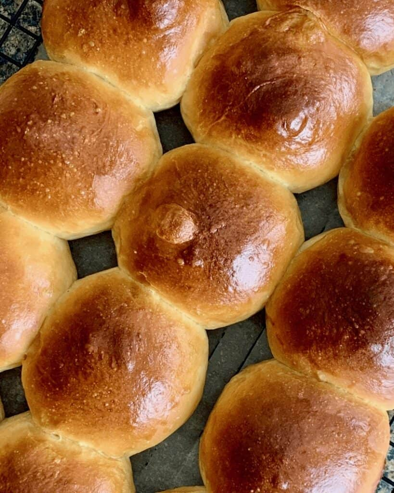

Home
Classic Dinner Rolls

These dinner rolls bake up fluffy and golden with just a hint of sweetness. Brush warm rolls with melted butter just before serving.
Ingredients:
- 2 cups all-purpose flour, divided, or as needed
- 2 tablespoons white sugar
- 1 (.25 ounce) envelope Fleischmann's RapidRise Yeast
- ½ teaspoon salt
- ½ cup milk
- ¼ cup water
- 2 tablespoons butter, plus more for brushing
Steps:
- Gather all ingredients.
- Prepare the yeast mixture:
- Combine ¾ cup flour, sugar, undissolved yeast, and salt in a large bowl.
- Heat milk, water, and 2 tablespoons butter in a saucepan until very warm (120 °F to 130 °F).
- Add the warm milk mixture to the flour mixture.
- Mix and knead the dough:
- Beat for 2 minutes on medium speed of an electric mixer, scraping the bowl occasionally.
- Add ¼ cup flour; beat for 2 minutes at high speed.
- Stir in enough remaining flour to make soft dough.
- Knead dough on a lightly floured surface until smooth and elastic, about 8–10 minutes.
- Cover dough; let rest for 10 minutes.
- Shape the rolls:
- Divide dough into 12 equal pieces.
- Shape each piece into a ball and place in a greased 8‑inch round pan.
- Cover and let rise in a warm, draft-free place until doubled in size, about 30 minutes.
- Bake the rolls:
- Preheat the oven to 375 °F (190 °C).
- Bake rolls until golden brown on top, about 20 minutes.
- Finish and serve:
- Brush with melted butter if desired.
- Serve warm and enjoy!